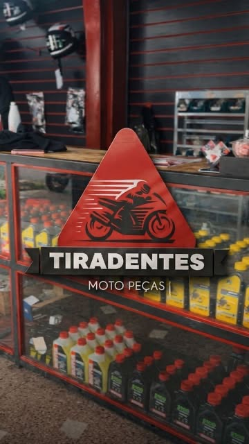

Loja de peças
Peça de moto no balcão, com a aplicação conferida antes da venda.

A peça certa, conferida antes de sair da loja
A pergunta que mais custa dinheiro no balcão é “será que serve?”. Diz o modelo, o ano e a versão — a gente confere a aplicação antes de vender.
- Original e paralela
As duas linhas. O orçamento padrão usa paralela de boa procedência. - Aplicação conferida
Modelo, ano e versão antes de vender. Peça que não serve é prejuízo dos dois lados. - Consumo e desgaste
Óleo, filtro, vela, pastilha, lona, relação, cabo, lâmpada e bateria. - Montamos na hora
Comprou aqui, a oficina instala — sem marcar outro dia.
Genuína, original ou paralela
Os três nomes aparecem misturados na hora da venda e confundem quase todo mundo. A diferença é quem fabricou e para quem a peça foi feita.

Mineral, semissintético ou sintético?
É a pergunta que mais aparece no balcão, e a resposta errada custa caro dos dois jeitos: pagar por óleo que a sua moto não precisa, ou economizar num óleo que não aguenta o uso que você faz.
- Mineral — o mais barato, intervalo mais curto. Serve bem em moto de baixa cilindrada com troca em dia.
- Semissintético — meio-termo. Aguenta mais tempo e mais calor que o mineral, sem o preço do sintético.
- Sintético — o que mais aguenta uso severo e giro alto. Faz sentido para quem roda muito, todo dia, no trânsito.
O que decide não é o preço, é a especificação. A viscosidade (20W50, 10W30) e a norma que o fabricante pede vêm no manual da moto — e é por ela que a gente começa. Traz o modelo e o ano que a gente indica.

O que ter em mãos na hora de comprar
Quanto mais preciso o pedido, menor a chance de voltar para trocar. Com estes quatro dados a gente acha a peça certa de primeira.
-
Modelo e ano
CG 160 2019 e CG 160 2022 não usam tudo igual. O ano muda peça. -
A versão
Start, Fan, Titan, ESD, com ou sem freio a disco — cada uma pede peça diferente. -
A peça velha, se der
Comparar lado a lado no balcão elimina a dúvida em segundos. -
Foto, se estiver longe
Manda no WhatsApp antes de vir. A gente confere se tem e separa.
Sua moto está parada agora?
Manda o modelo e o que está acontecendo. A gente responde com preço e prazo.
Falar no WhatsApp